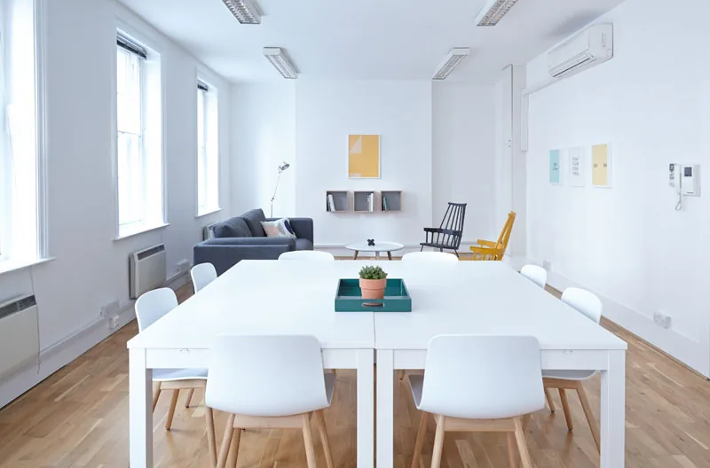

Емілі Тернер
Проєктна аналітикиня
Визначає корисні показники та допомагає команді оцінювати прогрес, строки й ризики.

UnApp поєднує планування проєктів та аналіз їхнього виконання. Завдання, відповідальні, строки й бюджет утворюють спільну картину роботи. Вона допомагає команді бачити пріоритети та розуміти, як щоденні дії впливають на загальний результат.
План визначає очікуваний шлях, а аналітика показує відхилення. Порівняння плану й факту, огляд навантаження та обговорення ризиків допомагають вчасно скоригувати наступний етап. На цьому навчальному сайті представлено концепцію сервісу та ілюстративні приклади.
Навчальний приклад ролей у продуктовій команді: дослідження потреб, розробка, аналітика та дизайн. Кожна роль допомагає перетворювати складні дані на зрозумілі рішення.
Проєктна аналітикиня
Визначає корисні показники та допомагає команді оцінювати прогрес, строки й ризики.
Розробник сервісу
Поєднує інструменти планування та звітності у послідовний робочий процес.
Дизайнер інтерфейсів
Працює над зрозумілими панелями, навігацією та читабельною візуалізацією даних.
Менеджерка продукту
Узгоджує потреби користувачів, пріоритети розвитку та цілі продуктової команди.
Розкажи про потреби своєї команди. Це демонстраційна форма: дані перевіряються у браузері, без надсилання та збереження.